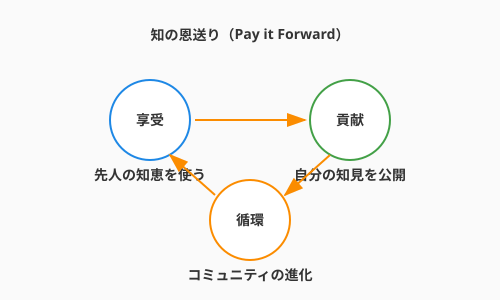

7.4 【外伝】冒険者のギルド——知の共有とOSS

導入: 一人の限界を超える
ここまで、あなたはチーム（パーティ）での開発プロセスを学びました。しかし、アルケミストの旅はそれだけでは終わりません。あなたの手元にある魔導言語（Pythonなど）や、これまで使ってきた便利な道具（ライブラリ）の多くは、世界中の見知らぬ賢者たちが無償で公開してくれた「オープンソース（OSS）」という名の共有財産です。
一人の力には限界がありますが、世界中の冒険者が集う「ギルド（コミュニティ）」に参加し、知恵を出し合うことで、人類はかつてないほど強力な魔法（ソフトウェア）を手にすることができました。本節では、あなたがこの偉大な循環の一員となり、知を送り出す側になるための作法を学びます。
ギルドの入り口：貢献（Contribution）の形
OSSへの貢献は、決して「高度なコードを書くこと」だけではありません。
- 報告の書（Issue）: バグを見つけたり、新機能を提案したりすることは、プロジェクトをより良くする貴重な一歩です。
- 翻訳の術（Translation）: 英語のドキュメントを日本語に訳すことは、仲間を増やす素晴らしい貢献です。
- 感謝の印（Star / Donation）: GitHubでStarを付けたり、開発者を支援したりすることも、立派なギルド活動です。
賢者たちの最高評議会：学術学会
ギルドが日々の冒険のための実践的な場であるなら、学術学会（Academic Societies）は、魔法の根本原理を究明し、その知恵を「真理」として後世に刻み込むための「賢者たちの最高評議会」です。
ここでは、一時的な流行に左右されない、数十年後も変わらない魔導の法則（理論）が、厳しい検証の儀式（査読）を経て、古の写本（論文）として記録されています。
- 知の探求: なぜその魔法が効くのか、より効率的な術式はないか。先人たちが積み上げた膨大な論文という名の「叡智の記録」に触れることで、あなたの魔法はより深く、揺るぎないものになります。
- 次世代への継承: あなたが発見した新しい術式が、厳しい検証を乗り越えて評議会に認められたとき、それは数十年、数百年の時を超えて、未来のアルケミストを導く「北極星」となるのです。
作法：プルリクエスト（PR）の心得
見知らぬ賢者の工房に自分のコードを提案する際は、第7章（7.2節）で学んだ作法がより一層重要になります。
- ForkとBranch: 相手の領域を汚さず、自分の複製（Fork）で慎重に作業します。
- 目的の明示: 「なぜその変更が必要か」を、背景を知らない他者にも分かる言葉で綴ります。
- 議論を愉しむ: レビューは「攻撃」ではなく「洗練のプロセス」です。異なる文化や視点からの指摘を、自分の術式を磨く糧にしましょう。
知の恩送り（Pay it Forward）
あなたが誰かのライブラリに助けられたように、あなたの書いた一行のコードや、一つのブログ記事が、地球の裏側の誰かの窮地を救うかもしれません。

「自分なんかが」と謙遜する必要はありません。あなたが今日、初心者の立場で苦労して解決した「エラーの記録」こそが、次に冒険を始める者にとって最も分かりやすい道標になるのです。
まとめ
- OSSは世界の共有資産: 享受するだけでなく、恩返しの心を持つ。
- 貢献は多種多様: コード、翻訳、報告、応援。自分にできることから始める。
- ギルドの精神: 互いに教え合い、高め合うコミュニティの力こそが、技術の進化を加速させる。
さあ、ギルドの門を叩きましょう。そこには、まだ見ぬ強力な魔法と、志を同じくする多くの仲間が待っています。
AIへの詠唱例
私が使っているOSSライブラリ [ライブラリ名] でバグを見つけました。
開発者に分かりやすく、かつ建設的なトーンで「バグ報告（Issue）」の下書きを英語で書いてください。
再現手順と期待される動作も含めてください。